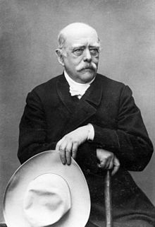
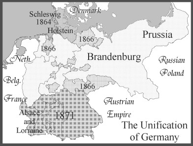

IF YOU CAN SEE THIS TEXT, YOU NEED TO ENABLE JAVASCRIPT FOR MANY FUNCTIONS OF THIS SITE
 Many people forget that Germany is a relatively young nation compared to France, Russia and Britain. The region of Germany before its unification was composed of various independent states and two Empires, Austria and Prussia. In 1815, the German Confederation was formed, but both these “super states” were competing for power, and as time went on Prussia and the German states became industrialized and in 1862 would be led by one of the most powerful men in history Otto Von Bismarck.
He became the prime minister of Prussia and aimed to make the Prussian states aligned with Germany and he was able to, and in 1866 the Austro-Prussian War occurred which led to a German victory. This made France worried about Germany's imperialist drive to expand its borders. In 1870 war broke out between Prussia and France, and the Prussian forces were able to capture Paris within 6 months. After occupying Paris, France would surrender, and after the war, the German Empire would become one of the strongest powers in Europe. Many Europeans saw this as a problem, but due to their horrific defeat France would start to build up better defenses in case Germany planned to take more French land, and the Germans took note of this and would plan around it in World War 1, by attacking through Belgium. Both sides were not prepared for the hell that their next war would bring.